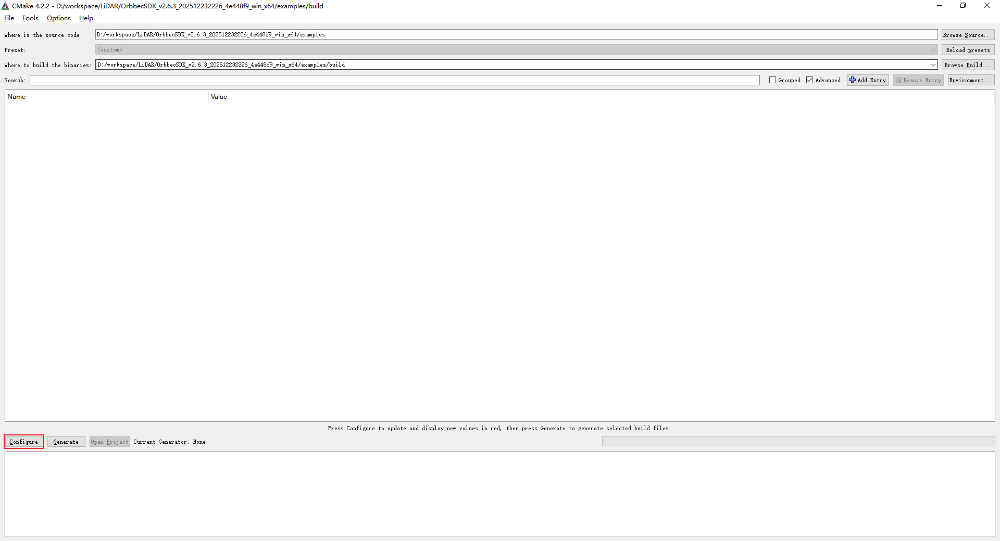
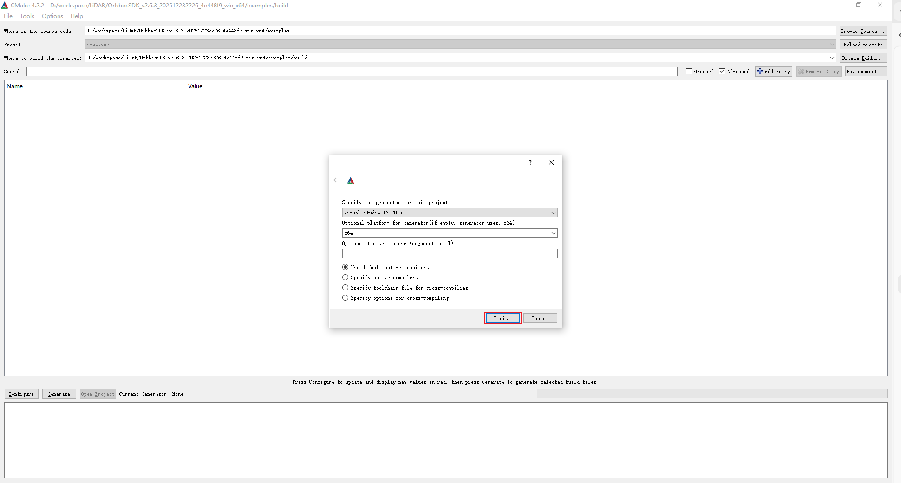
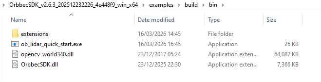
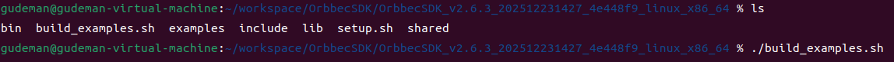
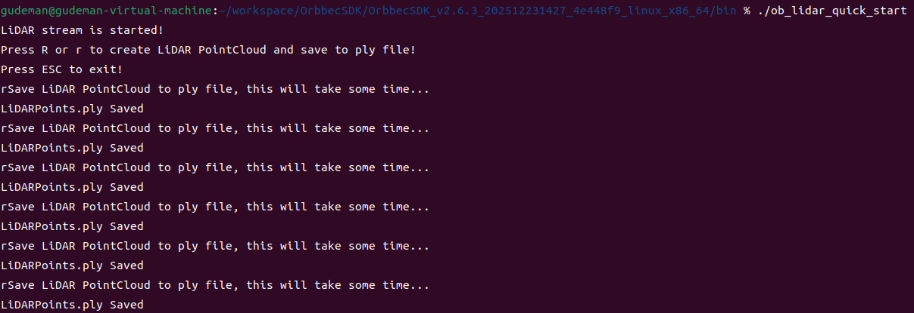

2.1. Quick Start on Windows Platform
2.1.1. build SDK package(.zip)
This section demonstrates how to quickly start and build SDK package on the Windows platform. The SDK version used here is v2.6.3.
First, extract the downloaded Orbbec SDK package, then navigate to the examples directory in the extracted folder and use CMake to compile the project.

Click the Configure button, and the following dialog will appear:

Open the sample project (orbbec_sdk_examples.sln) using Visual Studio 2019.

Use the ob_lidar_quick_start sample as an introductory example to understand and use the SDK API. First, build the ob_lidar_quick_start sample and run it to start capturing data streams.
Note: Make sure to copy the required SDK dynamic libraries(extensions & OrbbecSDK.dll) to the directory where
ob_lidar_quick_start.exeis located.

2.2. Quick Start on Linux Platform
2.2.1. build SDK package(.zip)
Build Requirements：
Operating System：Ubuntu 18.04 or later
Compiler：GCC，>=7.5
CMake v3.15 or later
Visual Studio Code：Recommended IDE for building and debugging
First, download the Linux version of the Orbbec SDK package and extract it.
Then run the
build_examples.shscript to compile the examples.

Navigate to the bin directory and run the
ob_lidar_quick_startsample to capture data streams.
2.3. How to Use install package
If you do not want to compile the Orbbec SDK, you can use the SDK installation package. Taking v2.4.8 as an example, first download the corresponding installation package for your platform.
The file OrbbecSDK_vx.x.x_win64.exe serves as the installation package for the Orbbec SDK and Orbbec Viewer tools on Windows.
The file OrbbecSDK_vx.x.x_amd64.deb serves as the installation package for the Orbbec SDK and Orbbec Viewer tools on Linux x86_64, likes ubuntu.
The file OrbbecSDK_vx.x.x_arm64.deb serves as the installation package for the Orbbec SDK and Orbbec Viewer tools on ARM64，likes NVIDIA Jetson AGX Orin , NVIDIA Jetson Orin NX , NVIDIA Jetson Orin Nano , NVIDIA Jetson AGX Xavier , NVIDIA Jetson Xavier NX.
2.3.1. Install via .deb Package
On the Linux x64 (ubuntu) platform, install using the following command. (If you are using the Arm64 platform, please use OrbbecSDK_vx.x.x_arm64.deb)
sudo dpkg -i OrbbecSDK_v2.x.x_amd64.deb
Check the entire package path of the Orbbec SDK using dpkg -L orbbecsdk, while the header files and library files of the Orbbec SDK will be installed in the /usr/local path.
dpkg -L orbbecsdk
Run the Orbbec Viewer.
sudo ./OrbbecViewer
2.3.2. Install via .exe Package
On the windows platform, Double-click OrbbecSDK_vx.x.x_win64.exe directly to install, After installation is complete, run OrbbecViewer or the Orbbec SDK from the installation directory.